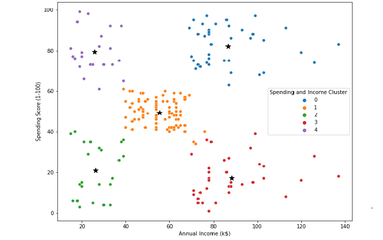

Shopping Customer Segmentation
Python Jupyter Notebook (Pandas; Matplotlib; Seaborn; K-Means Clustering)

The Exploratory Data Analysis was performed for the customer profiles of a shopping mall. Profile factors include each customer's annual income, gender, age, and spending scores, which indicate the customer's shopping habit and capacity.
Unsupervised machine learning algorithms are used to classify customers into clusters. The result of this analysis can help the marketing team and other stakeholders to identify target customers.
For more details, please check out my GitHub page.